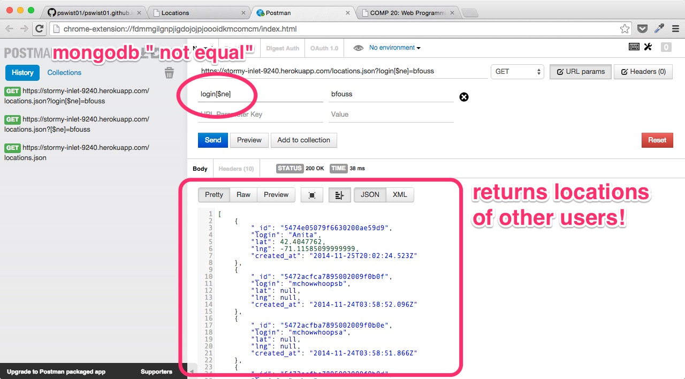
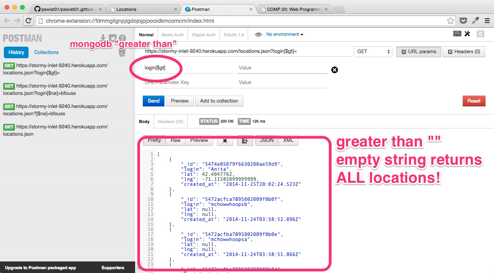
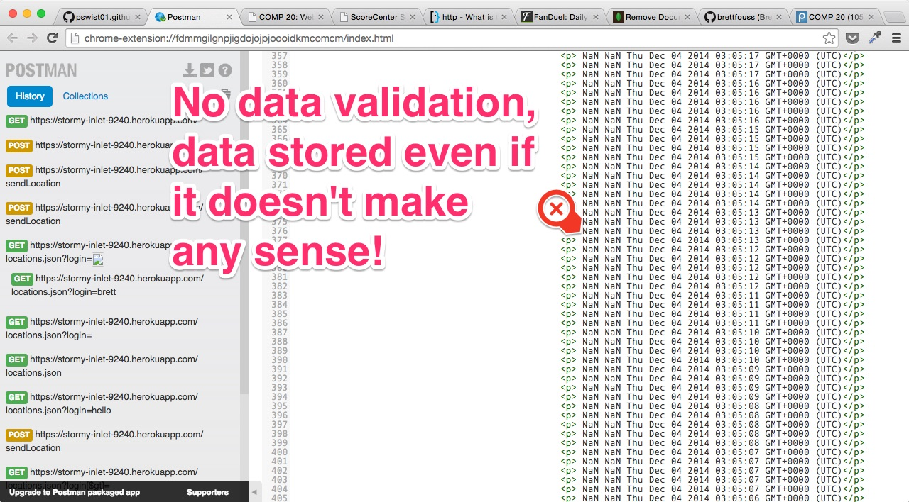
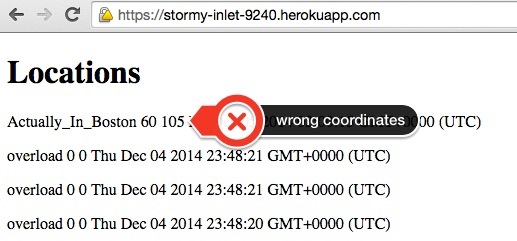
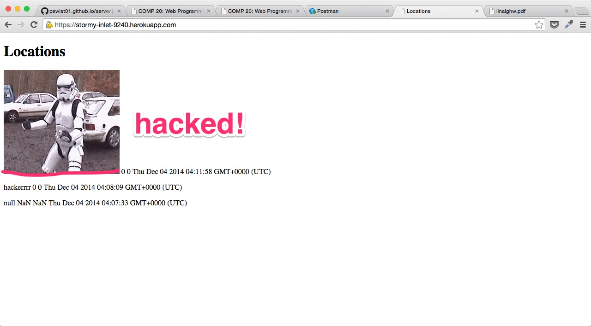
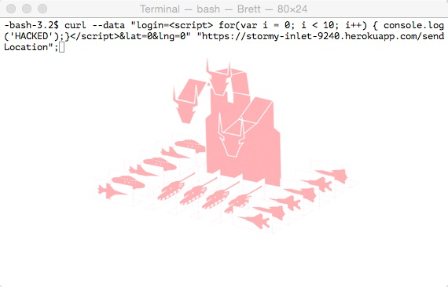
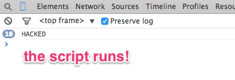

The two products I will be testing are "Marauder’s Map" and "Where in the World." The first, Marauder’s Map, is a client side interface. The interface renders a Google map using the maps API, and uses XMLhttprequest to request data from a server. In particular, the interface performs a HTTP Post to the server, sending it login information and location information. The server then returns an associative array in JSON format, containing location information of other posted locations and logins.
The second project, Where in the World, is a server side interface, with four different uses. The first corresponds to Marauder’s Map - it is a POST interface that takes in three parameters: login, latitude and longitude. The server then stores the posted data in a MongoDB, and sends back the information requested by Marauder’s Map. The second is a GET interface, /locations.json. This interface returns an associative array containing all logins matching a login name provided as a parameter to the get request by the client. Another GET interface returns JSON information from an MBTA API regarding the location of red line trains. Finally, the server contains a home directory “/“ that displays all of the check-ins and locations.
My tests were centered around the Where in the World server side program, as the server side application involved more technologies, and had more interfaces for me to break. Where in the World also stored data in MongoDB. I was interested to see how secure the database was, particularly, if I could access or edit data that should have kept private, or insert phony data into the database. At first, I focused on hacking the database without viewing the source code, as a nefarious hacker would not have access to this information. This is called “black box” testing.
I used a chrome extension called Postman to easily test the GET and POST requests. Postman allows me to easily edit get/post headers, parameters, and query values. It also displays response information in a clean, neat interface.
I also used curl to make post requests to the server. The advantage of using curl it that scripts can be written directly from the shell, which can be used to automate the requests. For example, I wrote a loop that made a high volume of requests to the database automatically. However, as curl is a command line shell program, the interface is obviously not as clean as Postman.
Other: screenshots and annotations were done using Skitch (OSX app).
This web application contains many security vulnerabilities, that, if exploited, affect the user experience and may sacrifice the user's security. Most of these errors stem from mishandling of data by the server side application, Where in the World. Particularly, the potential for problems arises when the client uses the send location interface to send login and location information to the server. Simply put, the application must be revised to check that parameters sent by the client are valid, safe, and expected. In it's current state, the application may be hacked to return all entries in the database, exposing user information. It is also possible to flood or save phony, nonsensical data into the database - for example, incorrect location information. This could affect the usefulness of the application, especially if other applications using the API rely on accurate information in the database. Perhaps most troublesome is the possibility to insert strings that effectively render HTML and run scripts on the browsers of clients accessing the application. The application should NOT give hackers the opportunity to alter the functionality of the application, as this could be exploited for malicious purposes.
The GET request returns a JSON associative array containing a user’s previous login information. The parameters for the query are concatenated to the URL. The logins and location information are stored in a MongoDB database. These two facts can be exploited to find the location information of ALL the users. MongoDB querying features several operators. I used two: [$ne], or “not equal,” and [$gt], or “greater than.” Adding these operators to the key of the query allows us to manipulate the results we see. While a query key-value pair of "login=brett” will return all of brett’s logins, changing the query to “login[$ne]=brett” will return everybody else's logins and locations.
Furthermore, there is also a way to return all of the logins. “login[$gt]=” will return every login greater than an empty string, in other words, all logins and locations.
Rationale for severity - This security bug poses a threat to the security of the users. This is an extreme concern. Particularly, hackers may exploit this bug to find out the location of users. This could prove to be very dangerous in the real world!
Recommendation - The application should analyze and verify that the parameters match the expected parameters for get and post requests. This could be accomplished using regular expressions, for example, to find and eliminate mongoDB operations from request parameters.
I was able to insert data that doesn’t really make sense into the database. When making a post request to /sendLocation, if the post parameters for latitude and longitude were not numbers, “NaN” (not a number) would be inserted into the database. Really, the database should not insert these entries at all. I also inserted entries with empty strings as a login, which doesn't make sense either. Bugs such as these call into question the potentional of non-human or automated users accessing and inserting data into the server's database.
In addition, I was able to run a curl script that inserted a high volume of requests to the server, in a fairly short amount of time. While this did not crash mongoDB, it did flood the database with unnecessary, meaningless information. The server should set a cap on number of requests made by any given client's IP Address in order to reduce the risk of flooding.
Rationale for severity - This constitutes poor database management, rather than a real security threat to users. However, it does sacrifice the integrity of the server. Without data validation, it is less certain that the machines trying to access the server are real users, and not bots. If the POST parameters are correct, and the data validation passes, it is more certain that the site is being used as intended. More importantly, better data validation by the server would solve other problems, such as cross site scripting and database injection.
Recommendation - The server application should attempt to identify what kind of data is included in the HTTP request. This could be accomplished with booleans and regular expressions, for example.
Using both curl and Postman, I was able to insert incorrect location information into the database. Particularly, I was able to send my coordinates as (60 N, 105 E), which (even though I'm in Somerville) is a location somewhere in Siberia!
Rationale for severity - For other applications using the API, this could be very problematic, especially if one user relies on the information of other users to be accurate for the application to be useful. I gave this a medium security rating because again, it calls into question the intentions of the client accessing the web application.
Recommendation - The application should cross-reference posted location information with the client's IP address. In node.js, the IP address can be obtained from the HTTP request using the following line of code:
var IP_address = request.connection.remoteAddress;
Once the IP Address is obtained, reverse DNS (or an API such as Free Geo IP) may be used to determine the client's location. While this process can only give an approximate location, it will suffice to confirm that the posted latitude and longitude are valid.
Using curl and Postman, I was able to insert HTML tags into the database, which when returned, would be rendered by the client’s web browser. I accomplish this by using an entire HTML tag as a parameter for my post request to /sendLocation. To demonstrate this, I inserted img src=‘image.jpg’, where image.jpg was the URL of a dancing storm trooper gif. Navigating to the root index, it is clear that this worked.
The ability to manipulate a server's HTML information is without a doubt a security threat. A devious hacker could insert explicit images or confidential information that other users would be able to view. However, even more dangerous is the ability to add scripts that would run on the users computer. The attacker could use this feature to run a script on a client's computer that would send information to another server, where the information could be used maliciously. To test this, I sent a script that console.log'ed the string ‘HACKED.’ as the value to the key login to /sendLocation. When I opened the home directory as a client, I checked my console log and found that the script had executed.
The following is the curl script I used to post the data.
This is the output in my log on the / directory of the herokuapp.
Rationale for severity - A hacker could exploit this loophole to run scripts on multiple client’s computers. The scripts would run when the / index was accessed by a client. At best, the hacker could use this loophole to annoy clients. At worst, the hacker could obtain the user's information. This can be used to alter HTML on a page, manipulate/view the user’s cookies, among other threats. It gives the hacker lots of power to exploit many users with a single HTTP post. An entire application could be embedded in the script, and the user wouldn't know!
Recommendation - The server application should identify and treat potential instances of XSS. To prevent scripts from being sent, for example, the '<' and '>' symbols could be converted or removed.
In order to ensure both the usefulness of this web application, and the security of the user base, corrections should be carried out based on the recommendations given in this report. Most changes should be fairly easy to implement, in fact, most of the code will merely involve a few regular expressions. This will allow the web application to continue using MongoDB for data storage. More secure code will supplement, not replace, existing code. As usage of this web application and API increases, it will become more and more necessary to fix these problems. The cost should be minimal. A programmer could be paid anywhere from $200 to $300 dollars to implement and test these changes. This would be accomplished fairly quickly.